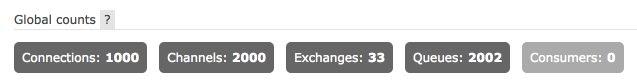
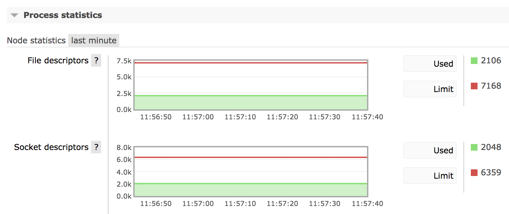
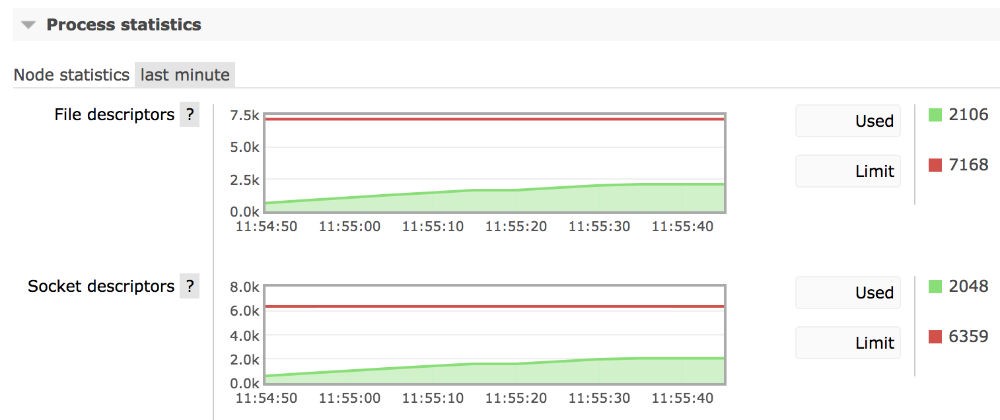
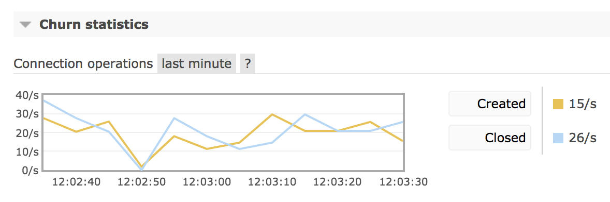
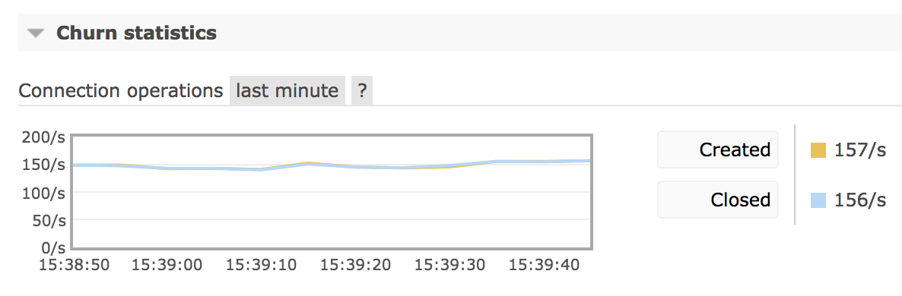

Connections
Overview
This guide covers various topics related to connections except for network tuning or most networking-related topics. Those are covered by the Networking and Troubleshooting Networking guides.
RabbitMQ supports several protocols:
- AMQP 0-9-1 with extensions
- AMQP 1.0
- RabbitMQ Stream Protocol
- MQTT 3.1 through 5.0
- STOMP 1.0 through 1.2
Note that despite the similarities in naming, AMQP 0-9-1 and AMQP 1.0 are different protocols, not different versions of the same protocol.
Many topics in this guide are equally applicable to all protocols. When that's not the case, the guide tries to highlight protocol-specific features and practices.
Channels is a closely related concept in AMQP 0-9-1 which is also covered in a separate guide.
This guide covers:
- The basics of how clients use RabbitMQ
- Connection lifecycle
- How to encrypt traffic on client connections
- Connection event logging
- Monitoring of connections and how to detect high connection churn scenarios
- Sustaining a large number of concurrent connections
- TLS
- Flow control
- Connection exceptions (protocol errors)
- Client properties and capabilities
- Network failure recovery
and other topics related to connections.
The Basics
Applications interact with RabbitMQ using client libraries. There are client libraries available for many programming languages and platforms. Each protocol has its own set of client libraries. Most client libraries are open source.
Both client libraries and applications that use them are referred to as "clients" in this guide. Where the difference matters, a more specific term is used (e.g. "application").
All protocols supported by RabbitMQ are TCP-based and assume long-lived connections (a new connection is not opened per protocol operation) for efficiency. One client library connection uses a single TCP connection. In order for a client to successfully connect, target RabbitMQ node must allow for connections on a certain protocol-specific port.
After a client connects and successfully authenticates with a RabbitMQ node, it can publish and consume messages, define topology and perform other operations that are provided in the protocol and supported both by the client library and the target RabbitMQ node.
Since connections are meant to be long-lived, clients usually consume messages by registering a subscription and having messages delivered (pushed) to them instead of polling. Clients that cannot keep a long-lived connection can use a special proxy to help reduce connection churn.
When a connection is no longer necessary, applications must close them to conserve resources. Apps that fail to do it run the risk of eventually exhausting its target node of resources.
Operating systems have a limit around how many TCP connections (sockets) a single process can have open simultaneously. The limit is often sufficient for development and some QA environments. Production environments must be configured to use a higher limit in order to support a larger number of concurrent client connections.
Protocol Differences
Different messaging protocols use different ports. Ports also vary for plain TCP and TLS-enabled connections. The Networking guide covers all ports used by RabbitMQ depending on what protocols are enabled, whether TLS is used and so on.
AMQP 0-9-1
AMQP 0-9-1 provides a way for connections to multiplex over a single TCP connection. That means an application can open multiple "lightweight connections" called channels on a single connection. AMQP 0-9-1 clients open one or more channels after connecting and perform protocol operations (manage topology, publish, consume) on the channels.
AMQP 1.0
AMQP 1.0 provides a way for connections to multiplex over a single TCP connection. That means an application can open multiple "lightweight connections" called sessions on a single connection. Applications then set up one or more links to publish and consume messages.
Connection Lifecycle
In order for a client to interact with RabbitMQ it must first open a connection. This process involves a number of steps:
- Application configures the client library it uses to use a certain connection endpoint (e.g. hostname and port)
- The library resolves the hostname to one or more IP addresses
- The library opens a TCP connection to the target IP address and port
- After the server has accepted the TCP connection, protocol-specific negotiation procedure is performed
- The server then authenticates the client
- The client now can perform operations, each of which involves an authorisation check by the server.
- The client retains the connections for as long as it needs to communicate with RabbitMQ
This flow doesn't change significantly from protocol to protocol but there are minor differences.
Protocol Differences
AMQP 0-9-1
AMQP 0-9-1 has a model that includes connections and channels. Channels allow for connection multiplexing (having multiple logical connections on a "physical" or TCP one).
The maximum number of channels that can be open on a connection simultaneously is negotiated by client and server at connection time. The client cannot be configured to allow for more channels than the server configured maximum.
After successfully opening a connection and authenticating, applications open one or more channels and use them to perform protocol operations, e.g. define topology, consume and publish messages.
AMQP 0-9-1 supports different authentication mechanisms. While it's most common for applications to provide a pair of credentials, x509 certificates and PKI can be used instead.
AMQP 1.0
AMQP 1.0 has a model that includes connections, sessions and links.
After successfully opening a connection and authenticating, an application opens one or more sessions. It then attaches links to the session in order to publish and consume messages.
MQTT
MQTT connections follow the flow described above. MQTT supports optional authentication. When it is used, RabbitMQ uses a pre-configured set of credentials.
STOMP
STOMP connections follow the flow described above.
Connection Traffic Encryption with TLS
All protocols supported by RabbitMQ allow for "clear text" (unencrypted) traffic, in other words, TLS is not a requirement. However, using TLS is highly recommended for production systems to prevent both traffic snopping and man-in-the-middle attacks.
Applications that use unencrypted connections will also send credentials as "clear text". Certain security scanners will report this as "AMQP Cleartext Authentication". The solution is to use TLS for those client connections.
To learn more, please refer to the guides dedicated to TLS: TLS for client connections, securing intra-cluster communication with TLS and troubleshooting TLS.
Logging
RabbitMQ logs all inbound client connections that send at least 1 byte of data. Connections that are opened without any activity will not be logged. This is to prevent TCP load balancer health checks from flooding the logs.
Successful authentication, clean and unexpected connection closure will also be logged.
This topic is covered in more detail in the Logging guide.
Monitoring
Number of currently open client connections and connection opening/closure rates are important metrics of the system that should be monitored. Monitoring them will help detect a number of problems that are common in messaging-based system:
- Connection leaks
- High connection churn
Both problems eventually lead to node exhaustion of resources.
Connection Leaks
A connection leak is a condition under which an application repeatedly opens connections without closing them, or at least closing only some of them.
Connection leaks eventually exhaust the node (or multiple target nodes) of file handles, which means any new inbound client, peer or CLI tool connection will be rejected. A build-up in the number of concurrent connections also increases node's memory consumption.
Relevant Metrics
Management UI provides a chart of the total number of connections opened cluster-wide:

A connection leak on monitoring charts can be identified as a monotonically growing number of client connections.
It is also possible to see how many file handles and sockets does a specific node have, which can be useful in determining connection leaks as well. The following chart demonstrates a very stable number of sockets open on a node:

This chart demonstrates a monotonically growing number of connections after a drop:

If the number of sockets used by a node keeps growing and growing, it is likely an indication of a connection leak in one of the applications.
Some client libraries, such as the Java client, expose metrics including the number of currently opened connections. Charting and monitoring application metrics around connections is the best way to identify what app leaks connections or uses them in a suboptimal way.
In many applications that use long-lived connections and do not leak them the number of connections grows on application start and then moderates (stays mostly stable with little fluctuation).
Management UI provides a chart on the rate of newly opened connections as of RabbitMQ 3.7.9. Below is a chart that demonstrates a fairly low new connection rate:

High Connection Churn
A system is said to have high connection churn when its rate of newly opened connections is consistently high and its rate of closed connection is consistently high. This usually means that an application uses short lived connections. While with some workloads this scenario is difficult to avoid, long lived connections should be used instead when possible.
RabbitMQ collects metrics on connection churn and exposes them via Prometheus and Grafana as well as management UI churn rate chart. Below is a chart that demonstrates a fairly low connection churn with a comparable number of connections open and closed in the given period of time:
While connection and disconnection rates are system-specific, rates consistently above 100/second likely indicate a suboptimal connection management approach by one or more applications and usually are worth investigating.

Some clients and runtimes (notably PHP) do not use long-lived connections and high connection churn rates are expected from them. A specialized proxy should be used with those clients to mitigate the churn they naturally create.
Environments that experience high connection churn require TCP stack tuning to avoid resource exhaustion under churn.
Resource Usage
Every connection consumes memory and one file handle on the target RabbitMQ node.
Most of the memory is used by connection's TCP buffers. Their size can be reduced significantly, which leads to significant per-connection memory consumption savings at the cost of a comparable reduction in connection throughput.
The maximum number of file handles a RabbitMQ node can have open is limited by the kernel and must be raised in order to support a large number of connections.
Supporting a Large Number of Connections
In some environments it's natural to have a large number of concurrently connected clients. For example, systems that involve a large number of hardware clients (the Internet of Things a.k.a. IoT workloads) can have many thousands of clients from day one.
Since connections consume resources, sustaining a large number of concurrent connections requires reducing resource consumption or provisioning more resources or nodes. In practice those two options are used in combination.
A large number of concurrent connections will generate a lot of metric (stats) emission events. This increases CPU consumption even with mostly idle connections. To reduce this footprint, increase the statistics collection interval using the collect_statistics_interval key:
# sets the interval to 60 seconds collect_statistics_interval = 60000
The default is 5 seconds (5000 milliseconds).
Increasing the interval value to 30-60s will reduce CPU footprint and peak memory consumption. This comes with a downside: with the value in the example above, metrics of said entities will refresh every 60 seconds.
This can be perfectly reasonable in an externally monitored production system but will make management UI less convenient to use for operators.
The Networking guide has a section dedicated to tuning for a large number of concurrent connections. It explains how to reduce per-connection memory footprint.
TLS
Client connections can be encrypted with TLS. TLS also can be used as an additional or the primary way of authenticating clients. Learn more in the TLS guide.
Flow Control
Connections that publish messages can outpace other parts of the system, most likely busy queues and queues that perform replication. When that happens, flow control is applied to publishing connections. Connections that only consume messages are not affected by the flow control applied to publishers.
It is therefore recommended that, when possible, publishers and consumers use separate connections so that consumers are isolated from potential flow control that may be applied to publishing connections, affecting manual consumer acknowledgements.
With slower consumers that use automatic acknowledgement mode it is very likely that connections and channels will experience flow control when writing to the TCP socket.
Monitoring systems can collect metrics on the number of connections in flow state. Applications that experience flow control regularly may consider to use separate connections to publish and consume to avoid flow control effects on non-publishing operations (e.g. queue management).
Error Handling and Protocol Exceptions
A connection can fail or be unable to satisfy a client operation. Such scenarios are called errors or protocol exceptions. They can indicate a transient condition (e.g. a resource is locked), a semantic issue, or a protocol implementation (e.g. incorrect framing).
Most errors in messaging protocols are considered to be unrecoverable. Note that protocol errors are different from network connectivity failures.
Protocol Differences
AMQP 0-9-1
In AMQP 0-9-1, connection errors are used to communicate unrecoverable ("hard") errors, such as incorrect framing or connection state violations. For example, if a channel with the same ID (number) is opened more than once. After sending an error to the client, the connection is closed.
Errors that can be corrected and retried are communicated using channel exceptions ("soft errors").
AMQP 1.0
In AMQP 1.0, most errors fall into either session errors or link errors. A session error is unrecoverable and leads to all operations received by the peer that's detected the error to be discarded until session termination.
A link error is limited to a particular link. Since links can be attached and reattached without affecting their session, in practice applications can retry an operation that's failed after correcting the root cause (if possible).
STOMP
In STOMP, the server communicates errors by sending an ERROR frame and closing TCP connection. The frame will contain an error message in the message field.
MQTT 3.1
In MQTT 3.1, servers have a limited number of ways to communicate an error to a client. The primary way is to close client's TCP connection. This provides little context and limited visibility for developers. This is a fundamental limitation of MQTT 3.1 design.
Quite often MQTT clients are configured to automatically reconnect and retry operations, potentially creating loops of error triggering, connection storms and variations of the thundering herd problem.
With MQTT, inspecting server logs and monitoring connections is therefore of particular importance.
Client-Provided Connection Name
RabbitMQ nodes have a limited amount of information about their clients:
- their TCP endpoint (source IP address and port)
- the credentials used
This information alone can make identifying applications and instances problematic, in particular when credentials can be shared and clients connect over a load balancer but Proxy protocol cannot be enabled.
To make it easier to identify clients in server logs and management UI, AMQP 0-9-1 client connections, including the RabbitMQ Java client, can provide a custom identifier. If set, the identifier will be mentioned in log entries and management UI. The identifier is known as the client-provided connection name. The name can be used to identify an application or a specific component within an application. The name is optional; however, developers are strongly encouraged to provide one as it would significantly simplify certain operational tasks.
Connection name must be specified using the "connection_name" field in the client capabilities table. Some client libraries, e.g. Java and .NET, provide more convenient ways of setting a custom name on a connection.
Client and Server Capabilities
Some protocols, namely AMQP 0-9-1, provide for clients and servers to express their capabilities when opening a connection. This can be thought of as a table of optional features that specific versions of RabbitMQ and client libraries may or may not support. This mechanism is similar to feature flags used by RabbitMQ nodes to determine what set of features is supported by all cluster members, and if a new member would be able to join the cluster.
The values for these capability keys are typically booleans, indicating whether or not the capability is supported, but may vary based on the nature of the capability.
For example, capability table presented by a RabbitMQ node to a client may look like (the format presented here can be thought of as pseudocode, since the actual table encoding is in a binary format and would not be human-friendly):
{ "product" = (longstr) "RabbitMQ",
"platform" = (longstr) "Erlang/OTP",
"information" = (longstr) "Licensed under the MPL 2.0. Website: https://rabbitmq.com",
"capabilities" = (table) { "exchange_exchange_bindings" = (bool) true,
"consumer_cancel_notify" = (bool) true,
"basic.nack" = (bool) true,
"publisher_confirms" = (bool) true },
"version" = (longstr) "3.12.10" }
The capabilities table for clients is optional: failure to present such a table does not preclude the client from being able to use extensions such as exchange to exchange bindings. However, in some cases such as consumer cancellation notification, the client must present the associated capability, otherwise RabbitMQ nodes will have no way of knowing that the client is capable of receiving the additional notifications.
Recovery from Network Connection Failures
Client's TCP connection can fail or experience serious packet loss that would make RabbitMQ nodes consider them unavailable.
Some client libraries provide a mechanism for automatic recovery from network connection failures. RabbitMQ Java client and RabbitMQ .NET client support such feature, for example. This feature is largely protocol- and client library-specific.
Other clients may consider network failure recovery to be a responsibility of the application. In this case they usually provide examples that include connection and topology recovery.
Getting Help and Providing Feedback
If you have questions about the contents of this guide or any other topic related to RabbitMQ, don't hesitate to ask them using GitHub Discussions or our community Discord server.
Help Us Improve the Docs <3
If you'd like to contribute an improvement to the site, its source is available on GitHub. Simply fork the repository and submit a pull request. Thank you!
Copyright © 2005-2023 Broadcom. All Rights Reserved. The term "Broadcom" refers to Broadcom Inc. and/or its subsidiaries.
Terms of Use •
Privacy •
Trademark Guidelines •
Your California Privacy Rights •
Cookie Settings